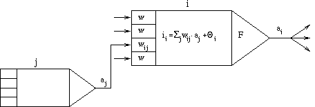
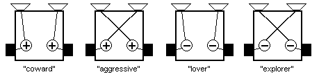
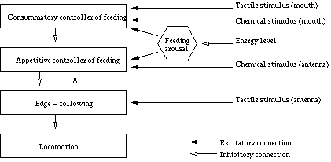
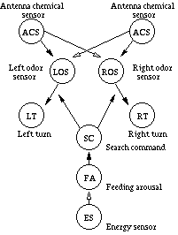
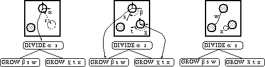
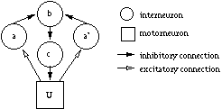

Neural network controlling architectures in autonomous agents
Richárd Szabó
Department of General Computer Science
University of Eötvös Loránd
1117, Pázmány P. s. 1/D.
Budapest, Hungary
Department of History and Philosophy of Science
University of Eötvös Loránd
1117, Pázmány P. s. 1.
Budapest, Hungary
Abstract
This paper gives an overview on adaptive synthetic animals with neural network as a behaviour controlling architecture. The overview covers simulated and physical agents living in different synthetic environments. The investigated controlling architectures are determined by a human designer (programmed) or nature-mimicking processes such as learning and evolution.
1. Introduction
1.1. Autonomous agents
Man always has an idea to build intelligent and autonomous entities to replace its own mental work. In the last few decades the dream is turning to reality, now we have robots in a number of industrial fields. The scope of application is far from exhausted, the level of intelligence of robots can be increased.
The topic is also interesting from other aspects, we can learn a lot about the properties of living beings. Beyond their industrial benefit, synthetic animals help to spread our knowledge in ethology, neurobiology and raise questions in philosophy and about artificial life [1].
The general purpose of synthetic animals (often called animat from the words animal and automaton) is to create adaptive, robust, complex behaviour with minimal representation requirements [2]. Adaptation is an ability to learn properties of the surroundings. A robust creature is insensitive to sudden changes of its synthetic environment. Complexity against minimal representation is something like shoes which are comfortable inside but looks tiny outside.
How can we realize these special synthetic creatures?
There are two main possible solutions: virtual or physical. The virtual implementation is a simulation which is simpler, cheaper than the real and suitable for a preliminary version. In this case the description of the environment has to be contained in the simulation that causes extra computational load. A physical implementation, namely a robot, is harder to implement because of engineering problems but it works in a real environment.
There is an important connection among the investigated agents of this paper. Their behaviour controlling architectures are based on neural networks that we will discuss separately in this section. The difference among the agents is in the method of their controller [3].
An artificial neural network consists of a set a processing units (neurons) which communicate by sending signals to each other over weighted connections [4]. The signals received on a neuron's input connections coming from other neurons and the neuron's current state are the parameters of the activation function which determine the actual activation of the neuron. An excitatory input (connection with positive weight) increases the activation of the neuron, an inhibitory input (connection with negative weight) decreases the activation. The actual activation as the neuron's output is multiplexed to other neurons as their input values. The processing units work in parallel and autonomously without any central control.

Figure 1.
Basic components of an artificial neural network. After [4]To increase the adequateness of a network to a special task we need to tune the network parameters: the number of processing units, connections and the weights of the connections. There are several approaches to solve this task but there is no universally suitable.
A skillfully tuned neural network meets the requirements we drafted in the previous section: adaptive, is able to generalize, robust, complex (its expressive capacity is equal to the Turing machine); but the architecture is fairly simple. The neural network approach differs from the conventional artificial intelligence approaches because there are no symbols and rules. Our only task is to create the network and condition it until it works adequately. This is a tempting offer: to solve the problem in question without detailed analysis. But the appearances can be deceptive: the emphasis is on the skillful tuning which requires deep knowledge about the problem.
The examples in this paper are somewhere in the middle: they try to exploit the advantages of the neural networks by adequate tuning methods without getting entangled in complicated details.
2. Preprogrammed agents
2.1. Braitenberg-vehicles
In the mid-eighties Braitenberg published a book entitled "Vehicles" [5]. This contains some of the earliest ideas on the description of animats. These agents' controlling architectures are designed and implemented by hand and after installation they are not able to change.
Braitenberg mentions really simple mobile agents with different number of sensors and motors in his book. The sensors and motors form various connections that causes various interesting behaviour. Considering the possibilities with two sensors and two motors we have four different basic behaviour types.

Figure 2.
Braitenberg-vehicles with two sensors and two motors.These animats can be viewed as primitive agents with a simple neural controller. The neural controller contains two neurons which connect a sensor and a motor. A plus sign means an excitatory, a minus sign an inhibitory connection. The connections between the sensors and the motors can be normal or crossed. The four different agents show four different trajectories. For example, the animat with crossed excitatory connections sensing stronger stimuli from the right side will result stronger input on the left neuron and, because of the excitation, a stronger motor response on the left side. So the animat will turn to the direction of stimuli speeding up. When it turns straight to the source of the stimuli the left sensor gets the same strong stimuli so the animat will attack the source of the stimuli. It can be called "aggressive". The "lover" animat contains normal inhibitory connections. Stronger stimuli from right side effect on the right motor decreasing its speed while the speed on the left side does not change. So the animat will turn to the direction of the stimuli and will stop in front of the stimuli source.
There are more complicated Braitenberg-vehicles with four or eight sensors and more neurons but the two sensors and two neurons example already showed that an extremely simple neural controller can already produce interesting animal-like behaviour.
2.2. Beer's artificial insects
Our another preprogrammed agent example is Beer's famous cockroach [6].
This small robot has to survive in a simulated environment with walls, obstacles, and food. The structure of the robot and its nervous system tries to be similar to the natural so it has three pairs of legs with motors, chemical and tactile sensors for navigation and food gathering, and angle sensors for locomotion. It has a hierarchical neural controller that is easier to build and easier to understand than a monolithic one. The levels of the hierarchy are the follows: locomotion, edge-following, appetition and consumption. Each level is a fairly autonomous neural network with some slight connections to other levels: excitatory input from the sensors it is connected to and inhibitory input from other levels. At the top of the hierarchy is the consummatory controller of feeding without any inhibitions from other levels. This controller works when its sensors make it work: the animat is hungry and there is food at the mouth of the animat. At the bottom of the hierarchy is the locomotion controller which works when the levels above let it work.

Figure 3.
Controll architecture of Beer’s artificial insect. After [6]Now we focus on the appetitive controller of feeding. This module is responsible for food seeking governed by three sensors. Two of them are chemical sensor antennae sensitive to odors emitted by food. The antenna neurons' outputs are compared by the left and the right odor sensors and the difference between the two directions generate a rotation in the movement of the animat. For example a higher excitation on the left turn neuron makes the animat turn to left governing the left front leg's lateral extension. The whole behaviour is active just when other levels does not inhibit this controller and besides the animat is hungry. The later is detected by the energy sensor. This neuron disinhibits the feeding arousal neuron with the decrease of the energy causing the activation of the search command neuron.

Figure 4.
Appetitive controller of feeding. After [6]It is interesting to observe that this architecture is similar to the composition of two Braitenberg vehicles: the so-called "coward" and the "explorer".
3. Neural network training
3.1. Paradigms of learning
In addition to the obvious idea of hand-crafting a neural controller to the demands of the task there are some other possibilities. It is better to build a fundamental neural network and then help it to train itself to the expectations of the task. This approach has a biological equivalent: learning.
There are three fundamental methods of artificial neural network training and a mixture of them is also possible.
In the supervised learning paradigm the neural network is provided with input and matching output pairs. The correct output can be compared to network response and the network can change its weights according to the differences between the values. We will investigate this type of training in the next section.
In some cases it is hard to couple a correct output to the input value and only a reinforcement signal can be given on the outputs of the network. This signal teaches the network if its action was good or bad. For example there is no straightforward answer how to avoid obstacles in a cluttered environment but punishing the collisions with low reinforcement values is expedient. This paradigm is called reinforcement learning and it is used frequently in animat research [9], [10].
The third paradigm of network training is unsupervised learning. In this case the network is learning alone without any supervisory help and it is supposed to discover statistically salient features of the input population. This method is useful in clustering, vector quantisation and map building. The last one is often used to help the animat to discover its environment and increase its navigational competence [11].
3.2. Wyeth's learning vehicle
Our training example is a robot built by Wyeth which is an instance for the supervised learning paradigm [7], [8].
The robot has been developed to perform hunting and gathering tasks, in other words, it has to explore its surroundings without any collision, locate and collect tennis balls, and return to the starting position. Before creating the robot’s controller it seemed to be practical to build a simulator. In the simulator the parameters of the environment, the controller and the robot can be set at will. This is useful for rapid investigations.
The structure of the neural controller is extremely simple: that is just a composition of the above mentioned "lover" and "explorer" Braitenberg-vehicles. In the two neurons of the network the transfer functions are responsible to project the neuron’s two inputs to an output. In this example the so-called Adaline and the Perceptron transfer functions appear.
Vi = S j wij Vj + Q i
Vi = g
(S j wij Vj + Q i) , where g() is the threshold function.Here Vi is the output from neuron i and Vj is the input from neuron j. Wij is the weight of the connection between i and j neurons. The second transfer function is just the binary version of the first one.
Learning take place on these two architectures with two different learning rules: the Widrow-Hoff rule on the Adaline and the Perceptron rule on the Perceptron. The rules are the following:
wij = wij + h (z i - Vi)Vj
|
wij = { |
wij + h z iVj , if z i ¹ Viwij , else |
where z i is the correct output of neuron i given by the supervisor and h is the learning rate which influences the speed of the convergence of the behaviour to an acceptable one. In the Widrow-Hoff rule the gradient descent of the error determine the change of the weight value while in the Perceptron rule the weight increases when the neuron’s activity corresponds to the correct output.
These two neural controllers in the simulator are working fairly well: they do not stuck among the obstacles, they only have problem after starting the second circle. At that point they seem to forget what they learnt at the beginning because the later input-output associations obscure them. Changing the learning rate could help but the animat would learn slower. This is called the stability-plasticity dilemma.
After the turns of the simulator the real robot training follows. This raises new problems about the processing of the real input image, the handling of the unexpected changes in the physical environment and in the robot’s dynamics. Image processing requires a vision system that is able to detect obstacles and tennis balls and its output can serve as an input to the investigated neural controller. To solve the other problem a bit more complicated network is necessary which is a composition of all four basic Braitenberg-vehicles. The advantage of the chosen architecture that the network dynamics and the learning rule is the same for this bigger network.
This network was able to learn the hunting and gathering behaviour after only four minutes of training, which means 2000 input-output pairs.
4. Evolutionary neural controllers
4.1. Elements of evolutionary algorithms
Evolutionary algorithms are a collection of computational methods used frequently in artificial intelligence. It is useful when we can not see all the elements of the problem space and it is better to take small steps improving our answer to the problem. We do not aim to find the best solution but an acceptable one. In one algorithmical step we do not try to improve one single animat's neural controller program but to find the best animat from a large number of candidates.
Here are the fundamental steps of an evolutionary algorithm:
The large number of different evolutionary algorithms comes from the variation of non-restricted parameters and the different approaches in every step.
4.2. Kodjabachian and Meyer's simple geometry-oriented cellular enconding scheme
This evolutionary approach to the animat problem is a representative example because it reveals a lot of details of the method [12]. The task is to create a six-legged animat's control architecture which can move in one dimension and after improvements can follow gradients and avoid obstacles.
The first step of the work is to design a suitable encoding scheme of the creature's neural controller to a genetically manipulable form. The chosen form is a tree labeled by instructions. It is easy to perform a mutation on a subtree or a recombination on subtrees. Each developing cell in the animat contains a copy of this tree which works as a program determining the development of the neural network. The useful instructions are the following:
|
DIVIDE a r |
create a new cell |
|
GROW a r w |
create a connection to another cell |
|
DRAW a r w |
create a connection from another cell |
|
SETBIAS b |
modify the bias parameter |
|
SETTAU t |
modify the time constant parameter |
|
DIE |
trigger cellular death |
Table 1.
Basic network developmental instructions. After [12]The execution of the instructions starts from precursor cells and is ordered by the structure of the cell's program tree: it starts at the root node reading the label and following it. Whenever the execution reaches a branch the leftmost branch contains the next instruction for this cell and the other branches will be executed as a new program parallel to their parent in their on coordinate system. After reading the last instruction of the program the cell stops developing and become an interneuron. The next figure shows an example on the development of a small network.

Figure 5.
The effect of a sample developmental code. After [12]Executing the divide instruction at the state of the first picture creates a new cell at the angle a and the distance r from the developing cell. The execution branches, the left side will grow a connection near to the left neuron and the right side will grow a connection somewhere in the middle. These hanging connections will be connected to the closest neuron: to the left one and to the child itself. Reading the last instructions of the tree the cells become interneurons.
It is worth mentioning that the trees' structure is constrained syntactically to reduce the size of the genetic search-space. A context-free grammar is defined which results networks limited to the size of 8 neurons and 32 connections. As it is shown this relatively small network is still enough to meet the requirements.
After the development of the neural network from the genetical code the network will work according to its dynamics. The neurons are governed by a leaky integrator model that has already been used in a lot of applications. The mean membrane potential mi of neuron i changes according to the following equation:
t i . dmi/dt = –mi + S j wij xj + Ii
,where t i is the time constant of the neuron’s membrane, xj is the neuron’s short-term average firing frequency and Ii is the sensorial input.
After deciding about the basic building blocks of the task it is necessary to determine the parameters of the algorithm used on the population of program trees. First the size of the substrate, the positions of the sensors, the motors and the precursor cells connected to the controller has to be fixed. On this background 200 randomly generated programs serve as a starting population. In every creation of a new population generation the following procedure is applied:
The fitness function is the distance covered by the animat controlled by the evolved program increased with the leg frequency terms to reward the fast non-jumping but running movements.
In a series of five experiments 100,000 replacements in each were made and one out of the five best controllers shows non-symmetric tripod gait that is the natural behaviour of a large number of insects. This tripod gait could be obtained with intrinsic periodic activity produced by central pattern generators, opposite legs have to work out of phase and the middle leg has to work in phase with first and the last opposite ones. One leg's periodic activity is ensured with an oscillator where the membrane potentials oscillate according to the excitatory and inhibitory connections in the circuitry.

Figure 6.
A basic oscillator. After [12]At this point we have an insect-like animat with biologically acceptable walking behaviour. This creature can serve as a basic module to animats performing more complicated tasks. This incremental approach is good way focusing our attention to the desired capability and it radically decreases the problem complexity and the search space.
In the following experiments new modules implement the starting and the stopping of the animat, gradient-following and obstacle avoidance [13]. These new neural networks are connected to the basic module altering its inner working. The creation of these modules is the same as the basic one's: evolution of the controller in question until an acceptable candidate appears.
Although the evolution of a good animat is time consuming and causes a heavy computational load, the result is reliable, robust and shows a quite complex behaviour with minimal representational costs.
5. Conclusions
After reviewing the literature we can state that there are several useful models and controlling methods in the field of autonomous creatures. The chosen architectures are usually simple to overview and to handle, and what is more important they work. An animat equipped with one of these controllers is embedded in the world the lack of which was a big shortcoming in artificial intelligence so far.
On the other hand there is always a compromise between the number of available solutions and the complexity of the method: for better performing animats we have to pay with time, memory or computational load so we are not able to find the fittest and simplest in one and we do not know how far we are from that. Other problem is that the animats are too task-specific, they only scratch the surface of possible problems and there has not been a general solution to correctly simulate — at least — a simple living being and even a human.
Finally borrowing the striking statements of [2] we can conclude that it may take a long time before we see an animat as complicated as an insect. Conversely, it may take a long time before we see an animat as simple as an insect.
Acknowledgements
Thanks to my supervisor György Kampis for his useful comments on the drafts of this paper and thanks to András Salamon for his constructive ideas.
References
[1] S. Smoliar: C. G. Langton, ed., Artificial life, Book review, Artificial Intelligence 73 (1995) pp. 371-377.
[2] M. Brand, P. Prokopowicz & C. Elliott: J-A. Meyer ans S. W. Wilson eds., From animals to animats I., Proc. 1st conference on simulation of adaptive behaviour, Book review, Artificial Intelligence 73 (1995) pp. 307-322.
[3] A. Guillot & J-A. Meyer: Synthetic animals in synthetic worlds, In Kunii et Luciani (Eds), Synthetic Worlds, John Wiley and Sons, In press.
[4] P. P. van der Smagt & B. J. A. Krose: Artificial neural networks, Elsevier Science Publishers B. V., 1991.
[5] V. Braitenberg: Vehicles, Bradford Book/ MIT Press, Cambridge, MA, 1984.
[6] R. D. Beer: Intelligence as adaptive behavior: an experiment in computational neuroethology, Academic Press, 1990.
[7] G. Wyeth: Neural mechanisms for training autonomous robots, Proc. of mechatronics and machine vision in practice 4, IEEE Computer Society Press, (1997) pp. 194-199.
[8] G. Wyeth: Hunt and gather robotics, International Conference on Field and Service Robotics, (1997) pp.334-341.
[9] A. G. Barto & R. S. Sutton: Landmark learning: an illustration of associative search, Biological Cybernetics 42, (1981) pp. 1-8.
[10] B. J. A. Krose & J. W. M. van Dam: Learning to avoid collisions: A reinforcement learning paradigm for mobile robot navigation, Proceedings of the 1992 IFAC/IFIP/IMACS Symposium on Artificial Intelligence in Real-Time control, (1992) pp. 295—301.
[11] U. Nehmzow & T. Smithers: Mapbuilding using self-organising networks in "Really Useful Robots", From animals to animats I., Proc. 1st conference on simulation of adaptive behaviour, MIT Press, 1991.
[12] J. Kodjabachian & J-A. Meyer: Evolution and development of modular control architectures for 1-D locomotion in six-legged animats, 1997, Submitted for publication
[13] J. Kodjabachian & J-A. Meyer: Evolution and development of neural networks controlling locomotion, gradient-following, and obstacle-avoidance in artificial insects, 1997, Submitted for publication